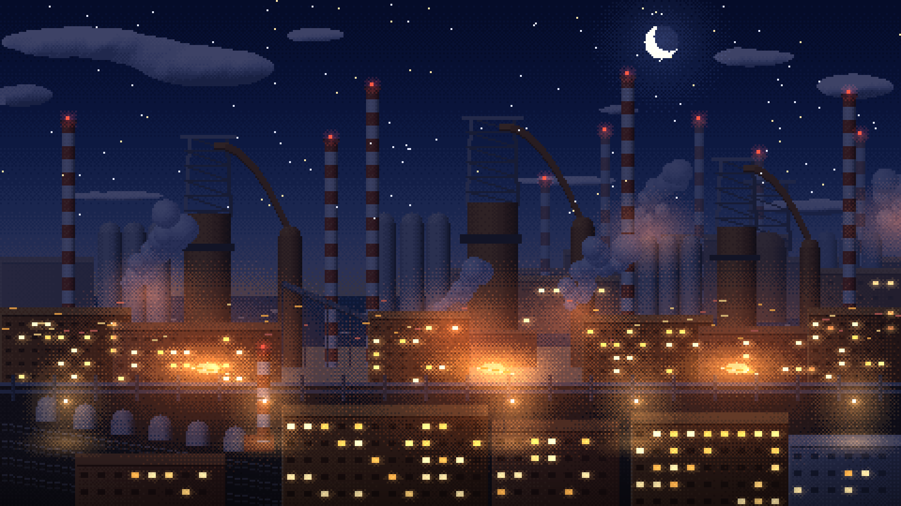
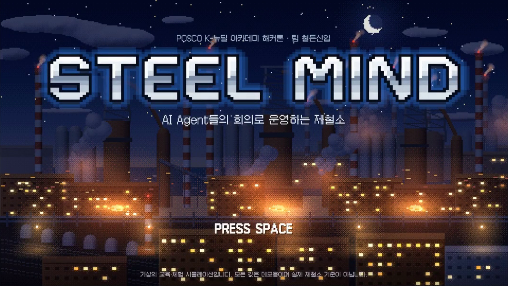
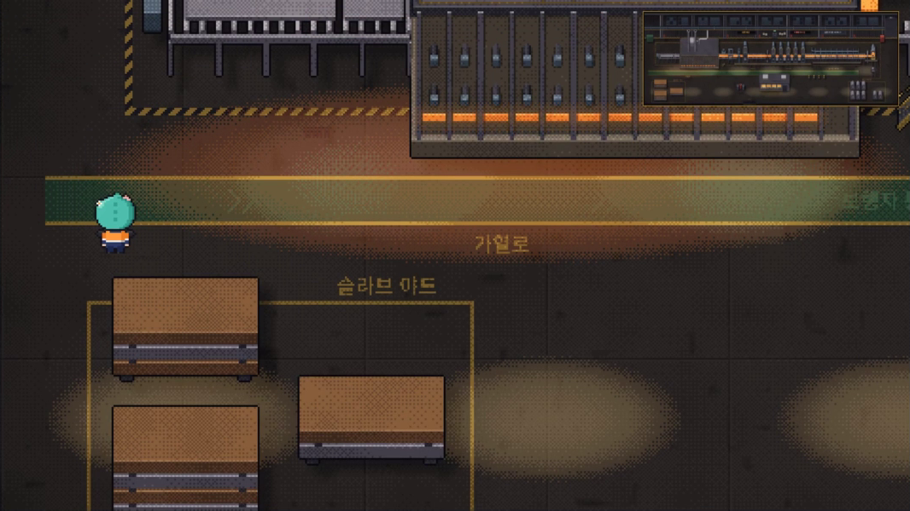
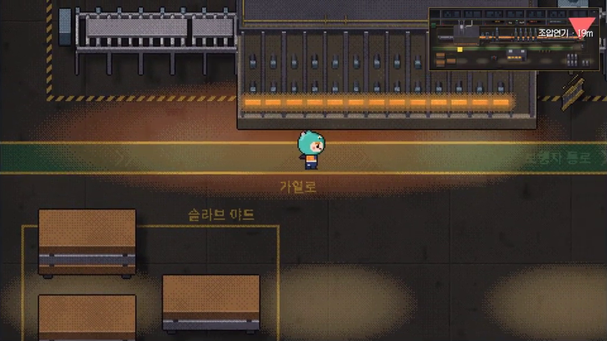
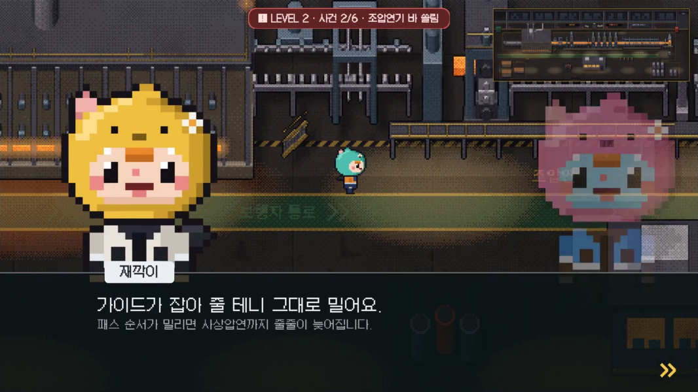
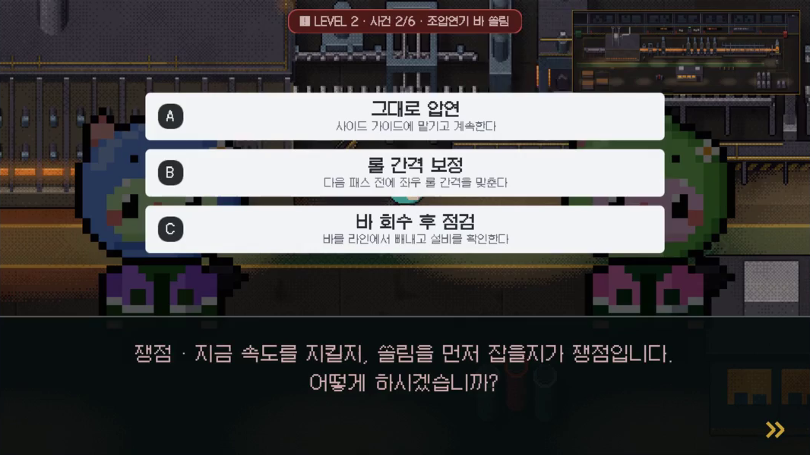
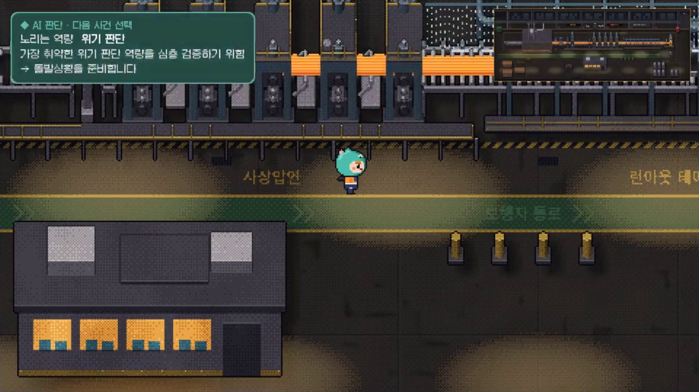

POSCO K-뉴딜 아카데미 내부 해커톤 · 결과보고서
제철소 돌발상황
대처 진단 시뮬레이션
STEEL MIND · AI가 약점을 찾아 상황을 내고, 재훈련으로 나아진 것을 숫자로 보여 주는 게임 기반 시뮬레이션

기간2026년 11월 9일(월) 09:00 ~ 11월 10일(화) 02:00
팀LLM 1기 철든신입 · 박소영(팀장) 양수빈 신원민 김다영
결과물Unity 6 게임 기반 시뮬레이션(열간압연 진단 시나리오, 4개 공정 맵), 경로 결과표, 기획서, 회의록
기준GitHub origin/main · 2026-11-09 19:19 PR #17 병합 시점
NCS 5개
연결한 열간압연
능력단위 + 직업기초 3개
11개
main에 병합된 PR
(#5 ~ #17)
01
해커톤 대주제와 프로젝트 주제
세 목표를 지키는 판단, 사람이 할 수 있는지 미리 본다
해커톤 대주제
AI로 더 안전하고, 멈추지 않고, 더 정확하게 생산하는 제철소를 만들어라.
우리의 답
“만약 그때 이렇게 했다면?”
신입 운영자의 돌발상황 대처 역량을 AI가 진단하고, 약한 역량만 맞춤 재훈련해 전후를 숫자로 확인하는 시뮬레이션. 결과는 맞춤 교육·사수 매칭·강점 직무로 이어진다.
왜 AI인가 · 인사팀이 같은 문제를 내는 것과의 차이
1선택돌발상황에서 조치 하나를 고른다
→
2역량 추정 갱신선택마다 5가지 역량 점수를 더한다
→
3약점 · 불확실성평균이 낮거나 덜 확인된 역량을 찾는다
→
4다음 상황 선택AI가 그 역량을 노린 사건을 고른다
↺ 다시 1로 · 사람마다 다른 순서
인사팀이 같은 문제를 낼 때
- 모두에게 같은 문제, 같은 순서
- 많이 풀어야 약점이 보인다
- 다시 풀면 외운 것인지 나아진 것인지 모른다
VS
STEEL MIND · 적응형 출제
- 답에 따라 다음 상황이 바뀐다
- 적은 상황으로 약점을 정확히 찾는다 [R1]
- 재훈련은 조건이 다른 처음 보는 상황으로 확인
ρ = .34상황판단검사(SJT)의 직무 성과 예측 타당도. 직무 분석에 기반할수록 높았다 [R2] → 상황과 선택지를 NCS 열간압연 능력단위에 맞춤
추천만진단 결과는 교육·코칭 추천용이며 인사 배치나 업무 적합성 판단에 쓰지 않는다. 교육 효과(매뉴얼 대비)는 아직 사람 대상 검증 전
02
해결하려는 문제
사고는 규칙을 몰라서보다 판단과 소통에서 난다
기획서의 “부서 간 충돌” 문제를, 신입 교육 현장의 문제로 좁혀 다시 정의했습니다.
현장의 문제이상 징후와 납기 압박이 겹치면 “조금만 더 돌리자”는 판단이 나온다. 압연설비 입측 가이드 끼임 사망 사례의 예방 대책도 운전 정지·전원 차단·기동장치 잠금이다 [S11]. NCS 「열간압연 안전관리」 학습모듈은 설비 불시 가동 등으로 매년 약 40여 명이 사망한다고 적는다 [N2].
교육의 문제신입은 부서 간 이해관계가 부딪히는 결정을 현장 전에 해 볼 기회가 거의 없다. 같은 매뉴얼·같은 문제로는 사람마다 다른 약점을 찾기 어렵고, 다시 평가해도 외운 것인지 나아진 것인지 모른다.
AI 시대의 문제AI가 늘수록 “AI가 사람을 어떻게 돕는가”가 중요하다. 정답을 대신 고르는 AI가 아니라, 사람의 약점을 찾아 연습할 상황을 골라 주는 AI가 필요하다.
매뉴얼 교육과 무엇이 다른가
기존 방식STEEL MIND
교육모두에게 같은 매뉴얼→약한 역량을 노리는 상황
평가공통 문제 세트→공통 상황 3개 + AI가 고른 돌발상황 3개
피드백정답과 해설→역량별 점수와 그 점수를 만든 선택(근거 사건)
재평가같은 문제 반복→조건이 다른 처음 보는 상황 2개로 BEFORE/AFTER
다음 단계교육 담당자가 판단→NCS 능력단위·추천 교육·사수·강점 직무 제안 (최종 결정은 사람)
안전을 사람의 시각으로 넓게
제철소는 위험한 곳이라 동료의 작은 보고를 듣고, 부서를 조율하고, 다음 조에 위험을 넘기는 협업과 소통이 곧 안전입니다. 그래서 진단 역량에 “소통·조율”을 넣었습니다(팀 회의, 11/9 저녁).
03
역할 분담 · 기획안 대비 실제
Unity로 정하면서 역할의 경계가 다시 그려졌다
왼쪽은 기획서(13:17 제출)의 역할, 오른쪽은 카카오톡 대화와 GitHub 커밋(모든 브랜치, 11/9)으로 확인한 실제 작업입니다.
기획서실제 (회의록·커밋)

박소영
ssoyoum · 팀장
기획 · 통합- 기획서와 플레이 흐름
- Agent 페르소나·회의 반응 설계
- JSON 형식 정의와 통합
→
기획 · 문서 · AI 결과 보고서 시안- 기획 초안·압연 HTML 시안 (04:47~05:16)
- 기획서 v1·v2·v3, 에이전트 설계서 (10:50~13:17)
- 결과 화면 HTML 초안 (14:56), 15시 할 일 정리
- 규칙 기반 회의·선택 DB 웹 결과 보고서 72b6b95
- 보고서 문장 Gemini 실험 389d589 daa6b6c (llm 브랜치)
양수빈
viiin2
게임 화면 · UI- Unity 메인 화면
- 4개 공정 맵·설비·사건 화면 설계
- 지표·사건·선택 UI
→
Unity 전체 구현 · 통합 · AI 연동- 압연 맵 #6, 4개 공정 맵 #7
- 시나리오 연결, 비주얼 노벨 회의
- 보고서·회차 기록·타이틀 #11 #12
- 적응형 출제·역량 보고서·Gemini 연동 #15
- 재훈련 전후 비교 #17 · 이날 커밋 62개
신원민
won2912 · SHIN
시나리오 · 규칙 엔진- 사건과 행동 목록
- 지표 계산·등급·밸런스
- 공정별 사건 데이터
→
시나리오 수치 · 검증 · 리뷰- Unity 버전 통일 제안 (09:59)
- 사건 6개 손실값·연결 규칙, 729개 경로 결과표 793e73a
- 결과 문서 충돌 해결, PR #6·#11·#12 승인
- 설비 24개 돌발 문제 48개, 상황 변형 8cc1ad7 (브랜치)
김다영
cookieimda
→
연출·시연 기획 · 월드맵 · 기수 보고서- 아트·기술 방향 제안 (10:23)
- 선택지 vs 탐색 모드 비교안, 시연 구성안 (14:16)
- 섬 월드맵 #13 #16, 비 오는 타이틀 c9f4990
- 공통 기록 형식·기수 진단 보고서 96d03db (브랜치)
바뀐 이유- 엔진이 Unity 하나로 모였다. 기획은 웹 화면·규칙 엔진·LLM 서버를 사람별로 나눴지만, 11:16 Unity 맵이 먼저 동작하면서 규칙 계산(C#)과 Gemini 호출까지 Unity 안에서 처리하게 됐다. 코드 통합은 Unity 담당에게 모였다.
- 나머지는 설계와 검증으로 옮겨 갔다. 시나리오 담당은 수치와 729개 경로 검증, AI 담당은 연출·시연 구성과 교육 담당자용 기록 형식, 팀장은 기획 문서와 AI 문장 실험을 맡았다.
- 확장을 빠르게 반영해야 했다. 진단 시뮬레이션으로 넓히는 작업을 한 브랜치에 묶어 17:43~18:07, 24분 만에 병합했다.
04
기획안 대비 추진현황
기획안 위에 중간 피드백을 더해 진단 기능까지 구현했다
기획서의 MVP 핵심 기능 F1~F5와 “이번에 넣지 않는 것”을 기준으로 main의 상태를 비교했습니다. 5개 중 2개는 그대로, 3개는 오후 중간 점검의 피드백을 받아 진단 중심으로 바꿔 구현했습니다.
| 기획서 | 계획 | 상태 | 실제 (main) |
|---|
| F1 공장 화면 | 공정 라인이 돌고, 사건 난 설비가 깜빡임 | 완료 | 열연 라인 6개 설비 연출, 경보 깜빡임 후 플레이어가 해당 설비로 이동. 제선·제강·연주 맵과 월드맵까지 만듦 |
| F2 사건과 AI 선택지 | LLM이 행동 목록에서 선택지 3개를 골라 문장으로. 제한 시간 초과 시 가장 위험한 행동 | 변경 | 선택지 문장은 시나리오 데이터에 고정. AI는 선택지 대신 “다음 사건”을 고름. 20초 타이머는 HTML 시안에만 있고 Unity 버전에는 넣지 않음 |
| F3 Agent 회의 | 결정 뒤 생산·품질·설비·안전 Agent가 찬성·불만·경고 | 변경 | 결정 전 회의로 바꿈(비주얼 노벨식 대화). 결정 뒤 찬반 반응과 추천 표시는 빼고, 부서 이름은 성격 별명 뒤로 숨김 |
| F4 지표 계산 | 지표 4개(생산·품질·안전·비용)에 변화값, 종합 점수와 S~C 등급 | 변경 | 선택마다 손실값은 규칙대로 계산(729개 경로 결과표). 결과의 중심은 5가지 대처 역량 점수로 옮김 |
| F5 결과 화면·AI 진단 | 등급, 지표 변화, 선택 기록, LLM 진단 로그 | 완료 | 진단 보고서(역량 레이더, 교육·사수·직무, AI가 고른 사건, 회차 기록, 재훈련 전후). Gemini가 진단과 코칭 작성 |
| 확장 · 이어지는 상태 | 앞 사건 선택이 다음 사건 출발 상태를 바꿈 (이번엔 제외) | 추가 구현 | 4개 연결 규칙을 데이터(carry)와 계산에 넣음. 예: 사상압연기 속도 유지 → 작업자 사건 안전 −3 |
| 확장 · 학습 기록 | “자주 희생한 지표” 돌아보기 (이번엔 제외) | 추가 구현 | 끝난 판을 모두 저장해 회차별로 비교하고, 약한 역량만 다시 훈련한 뒤 전후를 막대그래프로 비교 |
| 확장 · 공정 캠페인 | 제선→제강→연주→압연을 이음 (이번엔 제외) | 브랜치 | 4개 공정 맵과 공정 간 이동은 main. 설비 24개 돌발 문제 48개는 브랜치에서 작업 중 |
중간 점검에서 받은 피드백
- 결과가 성향 유형에 가까워, 역량으로 보여 주면 좋겠다
- AI가 문장을 넘어 판단 과정에 직접 참여하면 좋겠다
- 같은 선택이면 늘 같은 결과라 반복 학습이 어렵다
- 현장 교육·사수 배치와 이어지면 실무에 쓸 수 있겠다
이렇게 반영했다
- 5가지 대처 역량 점수와 근거 사건으로 진단 aa33475
- AI가 약점을 노린 다음 사건을 고르고 이유를 밝힘 4df0967
- 앞선 답에 따라 뒤 사건이 바뀌는 적응형 출제
- 추천 교육·사수·NCS 연결, 재훈련 전후 비교 #15 #17
그대로 지킨 원칙: 점수는 규칙이 계산하고 AI는 점수를 바꾸지 않는다. AI가 응답하지 않아도 기본 문장으로 멈추지 않는다. 사건·선택지·점수는 JSON 한 파일로 분리한다.
05
진단 시뮬레이션으로 넓힌 기능
체험에서 진단으로: 기획서에 없던 기능 8가지
오후 중간 점검에서 “결과를 성향이 아니라 역량으로, AI가 판단에 직접 참여하게, 현장 교육과 이어지게”라는 방향 제안을 받았습니다. 팀은 이를 확장 기회로 보고 아래 기능을 더했습니다.
| 기능 | 무엇을 더 잘하게 됐나 | 내용 | 근거 |
|---|
| 5가지 대처 역량 진단 | 결과가 유형이 아니라 역량 점수와 근거 사건 | 상황 인식·안전 우선·위기 판단·설비 이해·소통. 선택지마다 역량 점수(−3~+2)를 붙이고 레이더로 보여 줌 | aa33475 #15 |
| 적응형 사건 출제 | 사람마다 다른 사건 순서 | 기본 사건 3개 뒤, 후보 9개 중 “필요도 = 약점 + 불확실성”이 가장 큰 사건을 냄. 약점은 평균이 낮을수록, 불확실성은 1 ÷ (1 + 확인 횟수) | CompetencyModel.cs |
| AI가 다음 사건을 고름 | AI가 판단 과정에 직접 참여 | 규칙이 추린 후보 3개 중 Gemini가 다음 돌발상황을 고르고 이유를 화면에 밝힘(“Gemini 선택”). 6초 안에 답이 없으면 규칙 선택 | 4df0967 |
| AI 진단과 코칭 | 사람이 읽는 진단 문장 | 판이 끝나면 기록만 근거로 진단 2~3문장과 훈련 2개를 씀. “숫자를 지어내지 마라” 조건, 실패 시 기본 문장 | 4df0967 3ee5683 |
| 돌발상황 6개 | 역량을 골고루 확인 | 순간 정전, 냉각수 배관 파열, 두께 측정기 값 불일치, 긴급 주문과 정기 점검 충돌, 크레인 과부하, 신입의 “이상한 소리” 보고 | hot_rolling.json |
| 교육·사수·NCS 연결 | 진단 뒤 할 일이 보임 | 약한 역량마다 추천 교육, 매칭할 사수, NCS 열간압연 능력단위 (7장) | hot_rolling.json |
| 재훈련 전후 비교 | 교육 효과를 숫자로 확인 | 약한 역량을 노린 사건으로 다시 훈련하고, 진단(BEFORE)과 재훈련(AFTER)을 막대그래프로 비교. 향상·유지·하락 표시 | fd46b05 aca93d3 #17 |
| 편향 없는 회의 | 정답 힌트 없이 스스로 판단 | 부서 이름 대신 성격 별명으로 부르고, 추천 표시와 결정 뒤 찬반 반응을 뺌 | 6be722e 1db6407 |
AI와 규칙의 경계는 그대로
규칙: 역량 점수 합산, 후보 3개 추리기, 레이더·강점·약점 계산, 기본 문장. AI: 후보 중 다음 사건 선택과 이유, 진단 문장과 코칭. AI 답은 JSON으로만 받고, 후보에 없는 id면 버린다. 17:43 첫 커밋에서 18:07 병합까지 24분, 재훈련 기능까지 19:19에 main에 들어갔다.
06
공정 특성 분석
열연은 “판단이 늦으면 바로 손실이 되는” 공정이다
돌발상황 대처 역량을 재려면 ① 사건이 설비별로 또렷이 나뉘고 ② 판단을 미루면 바로 손실이 생기고 ③ 한 결정이 여러 부서 목표에 동시에 걸려야 합니다. 참고한 열연 자료의 원문 문장으로 열연이 이 조건을 갖추는지 확인했습니다. [ ]는 마지막 장 출처 번호입니다.
| 공정 특성 | 자료가 말하는 것 | 진단 설계에서의 의미 |
|---|
| 설비 6개가 한 줄인 연속 공정 | 재가열 → 조압연 → 사상압연 → 냉각 → 권취를 거치는 연속 공정. 주요 설비는 가열로·조압연기·사상압연기·런아웃 테이블·권취기 [S5] | 사건마다 “어느 설비에서” 났는지가 분명해 사건을 설비 단위로 나눠 낼 수 있다 (①) |
| 온도 창이 좁다 | 재가열 1,100~1,300℃ [S7], 가열은 변형에 필요한 힘을 줄인다 [S3]. 사상압연은 정해진 마무리 온도에서 끝나도록 속도를 맞춘다 [S1]. 권취 온도(400~700℃ [S7])가 성질을 결정한다 [S1] | 소재는 라인을 지나는 동안 계속 식는다. 판단을 미루면 온도가 창을 벗어나 품질 손실로 이어진다 (②) |
| 한 대의 이상이 전체에 걸린다 | 사상압연은 탠덤 방식이라 바 하나가 모든 스탠드를 한꺼번에 지난다 [S1]. 보통 7개 스탠드가 연속 배치되어 30~60mm를 1.2~22mm로 만든다 [S6] | 스탠드 하나의 과열·정지가 라인 전체를 세운다. “계속·감속·정지” 판단이 생산·설비·품질을 동시에 건드린다 (③) |
| 앞 공정 문제가 뒤로 번진다 | 압연 표면 품질은 디스케일링에 크게 좌우된다 [S4]. 스케일은 조압연 중에도 다시 자라 도중에 다시 제거한다 [S1] | 앞 사건의 선택이 뒤 사건 손실로 이어지는 연결 규칙의 근거 (③) |
| 사람과 설비가 가깝다 | 압연설비 입측 가이드 구동부와 구조물 사이 끼임 사망 사례. 예방 대책은 운전 정지·전원 차단·기동장치 잠금, 조업·정비·협력업체 공동 차단 [S11] | “생산을 이어 갈지, 사람부터 지킬지”를 묻는 안전 우선·소통 역량 사건의 근거 |
공정 특성 → 사건 설계
| 설비 | 근거가 된 특성 | 사건 |
|---|
| 가열로 | 덜 가열하면 변형 저항이 커진다 [S3][S7] | 슬라브 온도 미달 |
| 스케일 제거기 | 고압수(1,500psi [S1], 220bar [S3])로 산화층 제거, 표면 품질 좌우 [S4] | 수압 저하 |
| 조압연기 | 고온에서 폭이 퍼지고 에저가 폭을 유지 [S1] | 바 쏠림 |
| 사상압연기·두께계 | 탠덤 연속 압연, 마무리 온도 관리, X선 두께계로 롤 간격 조정 [S1][S6] | 롤 온도 상승, 순간 정전, 두께 측정기 값 불일치 |
| 런아웃 테이블 | 수냉으로 권취 온도까지 냉각 [S1] · 입측 가이드 끼임 사례 [S11] | 작업자 위험 구역 진입, 냉각수 배관 파열 |
| 권취기 | 권취 온도가 열연강 성질을 결정 [S1][S7] | 코일 옆면 밀림 |
제선·제강·연주는 같은 기준으로 비교할 자료를 아직 모으지 못해, 열연이 진단 조건을 충족한다는 것만 근거로 둡니다.
플레이 시나리오 · 시뮬레이션 화면
캡처 준비 중img/shot-1.png

시연 영상 0:03 화면
상황“열연 2라인, 야간 교대. 오늘 당신은 처음으로 이 라인의 운영 책임자를 맡았습니다.”
플레이어가 하는 일- Space로 시작
- 인트로 문장을 읽고 공장으로 들어감
시뮬레이션이 하는 일- 타이틀 배경음 재생
- 시나리오 데이터와 역량 정의를 불러옴
구현 기능 · 근거 커밋
타이틀 장면2248b3b
인트로5bdb41e
픽셀 로고3454581
Galmuri 폰트86cf82c
플레이 시나리오 · 시뮬레이션 화면
캡처 준비 중img/shot-2.png

시연 영상 1:01 화면
상황슬라브가 가열로 → 스케일 제거기 → 조압연 → 사상압연 → 런아웃 테이블 → 권취기를 지나 코일로 감깁니다.
플레이어가 하는 일- WASD로 걷기 · Tab 전체 공정 · M 월드맵
- 보행로에서는 빨리 이동
시뮬레이션이 하는 일- 라인 애니메이션과 설비 빛
- 월드맵에 현재 공정 주황 테두리
구현 기능 · 근거 커밋
압연 맵4f6d658
4개 공정 맵8408e35
섬 월드맵d0a5b54
현재 구역78ae7a0
플레이 시나리오 · 시뮬레이션 화면
캡처 준비 중img/shot-3.png

시연 영상 0:36 화면
상황LEVEL 2 · 사건 2/6 · 조압연기 바 쏠림 — 압연 중인 바가 한쪽으로 쏠립니다. 좌우 롤 간격이 조금 어긋난 것으로 보입니다.
플레이어가 하는 일- 화살표를 따라 사건 설비 앞으로 이동
- 현장에 도착하면 회의 시작
시뮬레이션이 하는 일- 설비가 빨갛게 깜빡이고 라인 감속
- 배경음이 경보음으로 바뀜
구현 기능 · 근거 커밋
경보 후 사건dca4767
현장 이동ca26c30
위치 안내bd063f7
경보음58b198b
기본 사건 6개: 가열로 온도 미달 · 스케일 제거기 수압 저하 · 조압연기 바 쏠림 · 사상압연기 온도 상승 · 작업자 위험 구역 진입 · 권취기 코일 옆면 밀림
플레이 시나리오 · 시뮬레이션 화면
캡처 준비 중img/shot-4.png

시연 영상 0:41 화면
상황재깍이 “가이드가 잡아 줄 테니 그대로 밀어요. 패스 순서가 밀리면 사상압연까지 줄줄이 늦어집니다.” — 다른 동료들은 롤 간격 보정, 바 회수를 말합니다.
플레이어가 하는 일- 대사를 읽고 Space로 넘김
- 누구 말이 맞는지 스스로 판단
시뮬레이션이 하는 일- 공장장이 쟁점을 한 줄로 정리
- 부서 이름·추천 표시 없이 성격 별명만
구현 기능 · 근거 커밋
회의 장면bf8c5e2
성격 별명1db6407
추천 숨김6be722e
캐릭터 목소리9746544
플레이 시나리오 · 시뮬레이션 화면
캡처 준비 중img/shot-5.png

시연 영상 0:48 화면
상황Ⓐ 그대로 압연 Ⓑ 롤 간격 보정 Ⓒ 바 회수 후 점검 — 쟁점: 지금 속도를 지킬지, 쏠림을 먼저 잡을지. 공짜 선택지는 없습니다.
플레이어가 하는 일- 숫자키 1·2·3으로 선택
- 라인이 바뀌는 모습을 확인
시뮬레이션이 하는 일- 생산·품질·안전·비용 손실을 규칙으로 계산
- 5가지 역량 점수 반영, 다음 사건에 영향
구현 기능 · 근거 커밋
숫자키 선택7c3df15
729개 경로793e73a
역량 점수aa33475
연결 규칙carry
플레이 시나리오 · 시뮬레이션 화면
6
돌발상황 · AI가 약점을 노린 사건을 낸다
캡처 준비 중img/shot-6.png

시연 영상 1:11 화면
상황“노리는 역량 위기 판단 · 가장 취약한 위기 판단 역량을 심층 검증하기 위함 → 돌발상황을 준비합니다” (Gemini가 쓴 이유)
플레이어가 하는 일- AI가 고른 돌발상황에 대응
- 왜 이 사건인지 이유를 확인
시뮬레이션이 하는 일- 필요도 = 약점 + 불확실성으로 후보 3개
- Gemini가 1개를 고르고 이유 작성 (6초 안에 답 없으면 규칙 선택)
구현 기능 · 근거 커밋
적응형 출제aa33475
Gemini 선택4df0967
키 재확인8fef403
모델 대체3ee5683
돌발상황 6개: 순간 정전 · 냉각수 배관 파열 · 두께 측정기 값 불일치 · 긴급 주문과 정기 점검 충돌 · 크레인 과부하 · 신입의 “이상한 소리” 보고
플레이 시나리오 · 시뮬레이션 화면
왼쪽: 진단 결과(역량 레이더·Gemini 분석·추천 교육) · 오른쪽: 맞춤 재훈련 전후 비교(상황 인식 38 → 100) · 시연 영상 1:19, 1:29 화면
상황진단 요약 → 대처 역량 5가지 → 교육·사수·직무 → AI가 고른 사건 → 사건 기록 → 회차 기록
플레이어가 하는 일- 좌우로 장을 넘기며 결과 확인
- 약한 역량만 다시 훈련
시뮬레이션이 하는 일- Gemini가 진단 문장과 코칭 2개 작성
- 재훈련 전후를 막대그래프로 비교
구현 기능 · 근거 커밋
보고서 장 넘김f9b2334
레이더181bc9f
회차 기록7b598a6
재훈련 전후aca93d3
07
기대 효과와 실무 적용
신입 교육용 돌발상황 대처 역량 진단 도구로
| 기획서의 기대 효과 | 실제로 넣은 것 |
|---|
| 부서 간 시야 | 생산·품질·설비·안전 동료가 같은 사건에 다른 조치를 말하고, 선택마다 네 영역 손실을 규칙으로 계산 |
| AI와 함께 결정하기 | AI가 다음 사건을 고른 이유를 화면에 밝히고, 판단과 책임은 플레이어에게 둠. AI는 점수를 바꾸지 못함 |
| 안전 우선 습관 | 안전 우선을 독립 역량으로 측정. 작업자 사건은 실제 중대재해 사례[S11]의 예방 대책(운전 정지·기동장치 잠금)을 정답 조치로 반영 |
| (없음 → 추가) | 개인별 진단 → 맞춤 교육 → 재훈련 전후 비교까지 한 번에 도는 교육 순환 |
역량 → NCS 능력단위 → 추천 교육
| 역량 | NCS 능력단위 | 추천 교육 | 매칭 직무·사수 |
|---|
| 상황 인식 | 1601020012_23v3 열간압연 설비유지보수 · 1601020013 계측기 운용 | 설비 일상점검 실습 · 계측값 교차 확인 | 설비 점검·계측 운용 |
| 안전 우선 | 1601020010_23v3 열간압연 안전관리 | 작업중지권(산안법 제52조) 사례 · LOTO 8단계 | 안전관리 |
| 위기 판단 | 1601020325_23v4 열연코일 사상압연 · 직업기초 문제해결능력 | 돌발상황 도상훈련 · 비상 대응 절차 | 압연 조업 운전 |
| 설비·공정 이해 | 1601020012_23v3 설비유지보수 · 1601020329_23v4 열연코일 품질관리 | 압연 설비 구조·원리 · 품질불량 원인 분석 | 설비 정비·품질관리 |
| 소통·조율 | 직업기초 대인관계능력(협업·갈등관리) · 의사소통능력 | 부서 간 협의 롤플레이 · 보고·전달 체계 | 교대 조장·공정 간 조율 |
실무 적용 방안
① 입문 교육 1주차 · 진단신입이 한 판(약 15분)을 플레이해 5가지 역량 기준선을 잡는다. 사건별 결정 시간과 신입/경력 구분도 함께 기록(브랜치 96d03db).
② 맞춤 교육 · 사수 매칭약한 역량의 NCS 능력단위와 추천 교육을 기존 과정에 바로 연결하고, 같은 역량이 강한 사수를 붙인다.
③ 재훈련 · 효과 확인교육 뒤 약점을 노린 사건으로 다시 플레이해 BEFORE/AFTER를 비교한다. 교육 효과를 숫자로 남긴다(main #17).
④ 기수 보고서 · 과정 개선공통 기록 형식(steelmind-run-v2)으로 기수 전체를 모아, 교육 담당자가 많이 약한 역량을 보고 과정을 고친다(브랜치).
확장: 사건 JSON만 더하면 제선·제강·연주로 넓힐 수 있고(설비 24개 돌발 문제 48개 작업 중), 사례집[S11]의 공정별 실제 사례로 안전 사건을 늘린다. 진단 결과는 교육·코칭 추천용이며 인사 배치나 업무 적합성 판단에 쓰지 않는다. 역량 점수는 현장 선배·교육 담당자 검토를 거쳐야 한다.
08
진행 기록 · 09:00 – 01:00
하루의 작업을 커밋으로 따라가기
| 시각 | 누가 | 한 일 (회의록·커밋) | PR |
|---|
| 04:47 | 박소영 | 회의 전 기획 초안과 압연 HTML 시안(20초 타이머, 숫자키) c39142c 7c3df15 | #4 |
| 09:28 | 박소영 | 범위 결정: 기획은 여러 공정, 구현은 압연 하나 먼저 | |
| 09:55 | 전원 | 역할 확정 · 09:59 신원민 제안으로 Unity 6000.3.27f1 통일 | |
| 10:23 | 김다영 | 심사기준·아트·기술 방향 제안(에이전트 색, Galmuri, JSON 검증과 대체 대사) | |
| 11:16 | 양수빈 | 걸어 다니는 Unity 압연 맵 4f6d658 | #6 |
| 12:59 | 양수빈 | 제선·제강·연주 맵, 공정 간 이동 8408e35 | #7 |
| 13:17 | 박소영 | 기획서 v3 커밋, 13:30 제출 89a9592 | #8 |
| 14:28 | 신원민 | 사건 6개 손실값과 729개 경로 결과표 793e73a | #9 #10 |
| 15:01 | 양수빈 | 비주얼 노벨식 회의 장면 bf8c5e2 | |
| 15:54 | 양수빈 | 운영 결과 보고서, 회차 기록, 타이틀·인트로 ad58618 279542a | #11 #12 |
| 16:31 | 박소영 | 보고서 문장을 Gemini로 채우는 실험 389d589 (llm 브랜치) | |
| 18:03 | 김다영 | 섬 월드맵, 현재 구역 표시 d0a5b54 78ae7a0 | #13 #16 |
| 18:07 | 양수빈 | 진단 시뮬레이션으로 확장: 역량 진단, 적응형 출제, Gemini 출제·진단 aa33475 4df0967 | #15 |
| 19:19 | 양수빈 | 재훈련 전후 비교, 성격 별명, Gemini 키 재확인 aca93d3 1db6407 | #17 |
| 19:09 | 신원민 | 설비 24개 돌발 문제 48개, 사건별 상황 변형 8cc1ad7 | 브랜치 |
| 19:25 | 김다영 | 비 오는 압연 타이틀 그림 c9f4990 | 브랜치 |
| 20:16 | 김다영 | 공통 기록 형식과 기수 진단 보고서 96d03db | 브랜치 |
| 22:00 | 전원 | (기획서 일정) 브랜치 병합, 밸런스 조정과 수치 고정, AI 연결·기본 문장 대체 확인 | 예정 |
| 00:00 | 전원 | (기획서 일정) 소스 정리, 결과보고서·발표자료, 시연 영상 녹화 → 01:00 제출 준비 완료 | 예정 |
시각은 커밋 작성 시각 또는 PR 병합 시각. 20:16 이후 줄은 기획서 v3 추진 일정이며, 실제 완료 시각은 작업 후 채웁니다.
09
출처
참고한 열연 자료와 돌발상황 데이터 출처
열연 설비·공정 자료 [S1~S10]
팀의 이전 프로젝트 ST-ROOKIE에서 공개 자료를 원문 문장과 함께 정리해 둔 목록(backend/data/ironmaking-sources.json, 68개) 중 열연 자료입니다. 사내 자료나 현장 운전 지침이 아닙니다.
진단 방법과 교육 근거 [R1·R2·N2]
| 자료 | 발행 | 주소 |
|---|
| [R1] Han (2018) Components of the item selection algorithm in computerized adaptive testing. JEEHP 15:7 | 한국보건의료인국가시험원 | jeehp.org/journal/view.php?number=277 |
| [R2] McDaniel 외 (2001) Use of situational judgment tests to predict job performance. J. Applied Psychology 86(4) | APA | doi:10.1037/0021-9010.86.4.730 |
| [N2] NCS 학습모듈 「열간압연 안전관리」 LM1601020010_23v3 외 | 교육부·한국직업능력연구원 | ncs.go.kr (학습모듈 내려받기) |
돌발상황 데이터 [S11]
ST-ROOKIE의 What-if 사고 사례를 실제 사례로 바꿀 때 쓴 자료입니다(ST-ROOKIE 커밋 8ac64ef, 2026-10-20, content/scenarios/incidents.json). “다르게 했다면”의 결과와 안전 절차는 사례집의 재해 예방 대책에서만 가져왔습니다.
| 공정 | 사례 (사례집 쪽) | 예방 대책(안전 절차) |
|---|
| 열연 | 끼임 사례 2: 압연설비 입측가이드 구동부와 기계 구조물 사이에 끼임 (8쪽) | 운전 정지·전원 차단·기동장치 잠금, 조업·정비·협력업체 공동 차단·해제, 열쇠 개별 관리 |
| 제선 | 추락 사례 4: 야간 설비점검 중 추락 또는 말림 (22쪽) | 추락 방지망·안전대, 통로 정리, 회전부 덮개, 점검 때 운전 정지 |
| 제강 | 기타 사례 2: 산소랜스파이프가 풀리며 근처 작업자 맞음 (28쪽) | 체결 토크 기준, 위험 구역 출입 제한, 대기 위치 지정 |
| 연주 | 추락 사례 5: 턴디쉬 주변 작업 중 내부로 추락, 화상 (24쪽) | 방열커버 고정, 개구부 출입 통제, 방염복 착용 |
저장소 근거 문서: 기획서 v1·v2·v3(docs/proposal/), 에이전트 설계서(docs/agent-design/agent_scenario.html), 회의록(docs/meetings/2026-11-09-day1.html), 시나리오(Resources/Scenarios/hot_rolling.json), 결과표(scenarios/hot-rolling-results.md). 모든 설비 상황과 수치는 교육용 가상 값이며 실제 제철소 기준이 아닙니다.